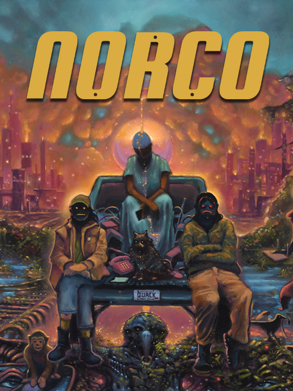

Norco
Norco
Details
|  | |
| Playtime | 9h 22m 0s |
| Last Activity | 2022-10-05 0:32:02 |
| Added | 2023-08-11 0:29:07 |
| Modified | 2025-10-02 9:39:58 |
| Completion Status | Completed |
| Library | Steam |
| Source | Steam |
| Platform | Macintosh PC (Windows) |
| Release Date | 2022-03-24 |
| Community Score | 78 |
| Critic Score | 92 |
| User Score | |
| Genre | Adventure Indie Point-and-click Puzzle |
| Developer | Geography of Robots |
| Publisher | Raw Fury |
| Feature | Single Player |
| Links | Steam GOG Official Website Epic Itch Wikipedia Twitch YouTube Playstation Xbox |
| Tag | 2D Adventure Atmospheric Colorful Conspiracy Dark Dystopian First-Person Gothic Investigation Mystery Noir Old School Philosophical Pixel Graphics Point & Click Retro Singleplayer Story Rich Surreal |
Description

NORCO is a point & click narrative adventure that immerses the player in the sinking suburbs and verdant industrial swamps of a distorted South Louisiana. Your brother Blake has gone missing in the aftermath of your mother's death. In the hopes of finding him, you must follow a fugitive security android through the refineries, strip malls, and drainage ditches of suburban New Orleans.
Immerse yourself in a surreal and uncanny South Louisiana

NORCO’s painterly and cinematic pixel art draws the player into its quotidian sci-fi world of disappearing swamplands, labyrinthine oil refineries, and other landscapes inspired by the titular town of Norco, Louisiana and other parts of Greater New Orleans. Sink into the rich field recordings and sound design by fmAura and a driving, post-industrial electronic score from Gewgawly I.
Unravel a mystery in a world haunted by the past and threatened by the future

What starts as a straightforward search for your missing brother quickly spirals into a multigenerational mystery. The lines between salvation, memory, technology, and nature bleed together into a uniquely compelling, contemplative narrative rooted in Southern literature, pulp fiction, and point & click adventure games both classic and contemporary.
Explore alongside sharply drawn characters with deep roots, rich backstories, and complex motives

A chaotic bayou pirate, bar-stool private detective, escaped security android, and your stuffed childhood monkey will all offer assistance in an eroding and uncertain world. Solve puzzles, fight your way past corporate security goons, and infiltrate an influencer cult squatting an abandoned mall on the outskirts of New Orleans.

Disclaimer: Though inspired by real-world themes, NORCO is entirely fictional and not intended to represent any actual individuals, entities, or events.